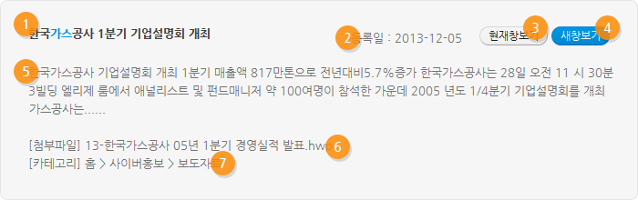

통합검색 도움말
통합검색이란?
한국가스공사의 통합검색 서비스는 빠르고 쉽게 원하는 정보를 찾을 수 있는 서비스를 말합니다. 한국가스공사 국문과 영문 사이트, 용어사전, 가스과학관 국문과 영문 사이트의 내용을 검색할 수 있습니다.
검색방법
- 전체 사이트에서 원하는 검색어가 들어간 페이지를 모두 찾고 싶은 경우
- 검색 창 앞에 선택바를 클릭하여 '통합검색'에 놓은 후, 검색 창에 원하는 검색어를 입력하고, 검색 버튼을 클릭합니다.
- 입력한 검색어가 포함된 모든 페이지가 검색됩니다.
- 특정 사이트에서 원하는 검색어가 들어간 페이지를 모두 찾고 싶은 경우
- 검색 창 앞에 선택 바를 클릭하여 원하는 사이트에 놓은 후, 검색 창에 원하는 검색어를 입력하고, 검색 버튼을 클릭합니다.
- 선택한 사이트 내에, 입력한 검색어가 포함된 모든 페이지가 검색됩니다.
- 검색된 페이지 중에서 다른 검색어를 이용해서 검색하고 싶은 경우
- 검색 창에 원하는 검색어를 입력한 후, 검색 버튼 옆의 '결과 내 재검색' CheckBox를 선택한 후 검색 버튼을 클릭합니다.
- 검색된 결과 중에서 다시 입력한 검색어가 포함된 모든 페이지가 검색됩니다
검색 연산자 설명
| 검색 연산자 | 표기 | 검색 연산자 설명 |
|---|---|---|
| AND | 띄어쓰기 또는 & |
|
| OR | | |
|
| NOT | - |
|
검색결과 보기
검색한 후 아래와 같은 검색 결과가 나옵니다. 각 항목의 사용법에 대한 설명은 아래와 같습니다.

- 페이지 제목 : 해당 페이지의 제목이 출력된다. 클릭하면 해당 페이지로 이동한다. (현재 창에서 보기 기능)
- 등록일 : 해당 페이지의 작성일이 출력된다. 게시판 글의 경우, 등록일이 출력된다.
- 현재 창에서 보기 : 검색 결과 페이지의 내용을 보고 싶은 경우, 클릭하면 현재의 창에서 내용을 볼 수 있다.
- 새 창으로 보기 : 검색 결과 페이지의 내용을 새 창으로 보고 싶은 경우 클릭한다.
- 본문 : 검색된 내용이 보여진다.
- 첨부파일 : 검색결과 중 첨부파일을 검색한 경우 활성화 된다.
- 카테고리 : 검색 결과 페이지의 위치를 출력한다.